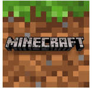

як ви вже прочитали біографію автора то знаєте що він обожнює відеоігри.ось в яких іграх він проводить більше всього часу:

1 гра це rust
Rust — це багатокористувацька відеогра в жанрі симулятор виживання, розроблена Facepunch Studios, яка створила Garry's Mod. Rust був уперше випущений у ранньому доступі в грудні 2013 року, а повний випуск отримав у лютому 2018 року. Rust доступний у Windows і macOS. Консольні версії для PlayStation 4 і Xbox One, розроблені спільно з Double Eleven, були випущені в травні 2021 року. Спочатку Rust був створений як клон DayZ, популярного мода для ARMA 2, з елементами крафта, схожими на елементи Minecraft.Ігровий процес
Головним завданням є виживання в жорстких умовах навколишнього середовища. Гравці повинні турбуватися про харчування, захист, майструвати собі знаряддя, бази й укріплення, об'єднуватися між собою. Тварини, такі як вовки і ведмеді, являють собою загрозу для нових гравців, але головну небезпеку становлять інші люди. Гравці можуть боротися за допомогою луків, зброї ближнього бою і вогнепальної зброї. Кулі та інші снаряди летять по балістичній траєкторії. Є кілька типів куль для кожної зброї. Тяжкість шкоди залежить від частини тіла в яку поцілили, а це означає, що поранення в голову тяжче, ніж поранення в іншу частину тіла. В грі присутній лише мультиплеєр.
При початку нової гри гравець має тільки камінь і смолоскип. Для того щоб вижити в цьому світі, гравець повинен збирати своїм персонажем ресурси, такі як дерево і камінь, і використовувати ці ресурси для майстрування інструментів, зброї та іншого обладнання. Також гравець може збирати тканину та м'ясо, вбиваючи тварин і добувати метал та сірку з гірських порід і рубати дерева. Персонаж здатний створити початкові речі у грі одразу, а інші повинен вивчити на спеціальному верстаку який також має 3 рівні апгрейду. Для сворення більш складних речей він повинен використовувати витратні матеріали(компоненти). Компоненти розкидані по карті і деякі з них не можна створити самотужки.

3 гра це minecraft
Minecraft ( вимов. Майнкрафт ; від англ. mine - "шахта; добувати" + craft - "ремесло; створювати") - комп'ютерна інді-гра в жанрі пісочниці , створена шведським програмістом Маркусом Перссоном і випущена його студією Mojang AB . У 2009 році Персон опублікував початкову версію гри; Наприкінці 2011 року було випущено стабільну версію для комп'ютерів Windows , Linux і macOS з поширенням через офіційний сайт. У наступні роки Minecraft була портована на мобільні пристрої під керуванням Android , iOS та Windows Phone ; на ігрові приставки PlayStation 3 , PlayStation 4 , PlayStation 5 , PlayStation Vita , Xbox 360 , Xbox One , Xbox Series X/S , New Nintendo 3DS , Nintendo Switch та Wii U ; та інші платформи. У 2014 році корпорація Microsoft придбала права на Minecraft разом із студією Mojang AB за 2,5 мільярда доларів. У 2017 році було випущено мультиплатформну версію гри, що об'єднала різні версії для різних пристроїв .
Перссон написав Minecraft мовою програмування Java з використанням бібліотеки графічного виводу LWJGL , черпаючи ідеї з таких ігор, як Dwarf Fortress , Dungeon Keeper та Infiniminer [англ.] . Minecraft дає в розпорядження гравця тривимірний світ, що процедурно генерується і змінюється , повністю складається з кубів - його можна вільно перебудовувати, створюючи з цих кубів складні споруди - ця особливість робить гру схожою з різними конструкторами , такими як Lego . Minecraft не ставить перед гравцем будь-яких конкретних цілей, але пропонує йому свободу дій: наприклад, гравець може досліджувати світ, видобувати корисні копалини, битися з противниками та багато іншого . Гра включає додаткові режими, наприклад, «виживання», де гравцеві потрібно самому видобувати ресурси, і «творчість», де гравець має ці ресурси в необмеженій кількості . Механіка «редстоуна» ( англ. Redstone ) дозволяє створювати в Minecraft складні логічні схеми – тим самим гра може бути віртуальним конструктором для програмістів та інженерів .
Minecraft отримала загальне визнання критиків та безліч нагород. Серед основних достоїнств оглядачі виділили мінімалістичний дизайн, що запам'ятовується, що виділяє гру на тлі AAA-проектів ; реграбельність ; простоту в освоєнні; і більшу свободу творчості, обмежену лише фантазією гравця. Недоліками вони визнали складнощі зі створенням мережевої гри, відсутність режиму навчання та наявність недопрацьованих ігрових елементів; однак розробники усунули ці недоліки у наступні роки .
Minecraft є найбільш продаваною грою в історії: станом на 2023 рік було продано більше 300 мільйонів копій на всіх платформах [ 5 ] , а кількість гравців, які запускали гру хоча б раз на місяць, склала 172 мільйони . У 2025 році Minecraft потрапила в книгу Книгу рекордів Гіннесса як найпроданіша гра в історії (понад 350 млн копій) [ 6 ] .
У популяризації та комерційному успіху Minecraft велику роль відіграли контент користувача , у тому числі відеоролики, що розповсюджуються через YouTube , і безліч сторонніх модифікацій . У міру зростання популярності гри багаторазово обговорювалася і можливість неігрового застосування, зокрема у сферах автоматизованого проектування та освіти . У 2016 році Mojang Studios спільно з Xbox Game Studios розробила спеціальну версію гри Minecraft: Education Edition для освітніх закладів .
Minecraft вплинула на індустрію комп'ютерних ігор і породила безліч клонів . На даний момент вона являє собою цілу франшизу , що включає, крім основної гри, такі ігри як Minecraft: Story Mode , Minecraft Earth , Minecraft Dungeons і Minecraft Legends .